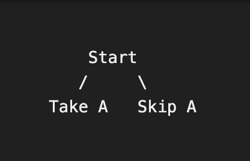
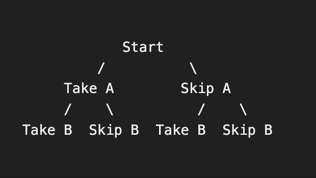
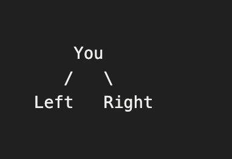
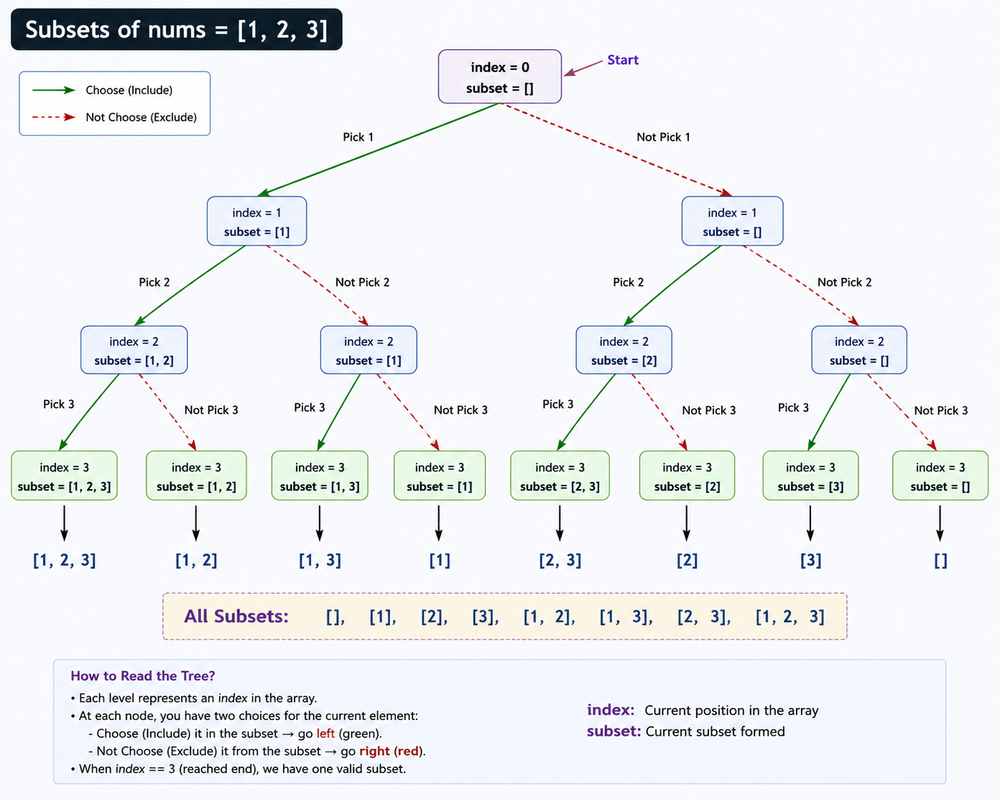
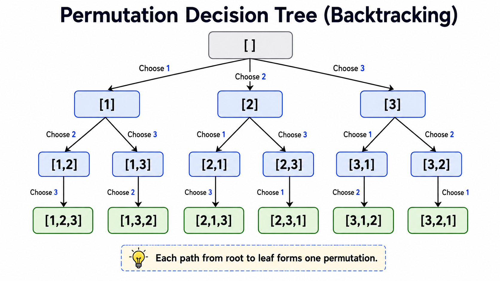
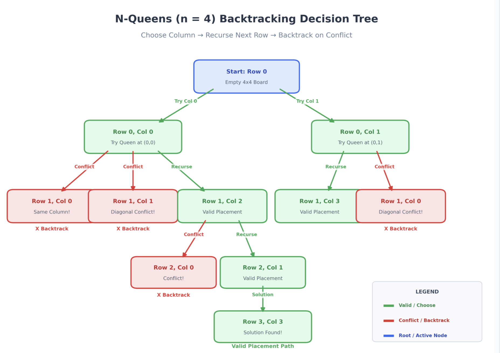
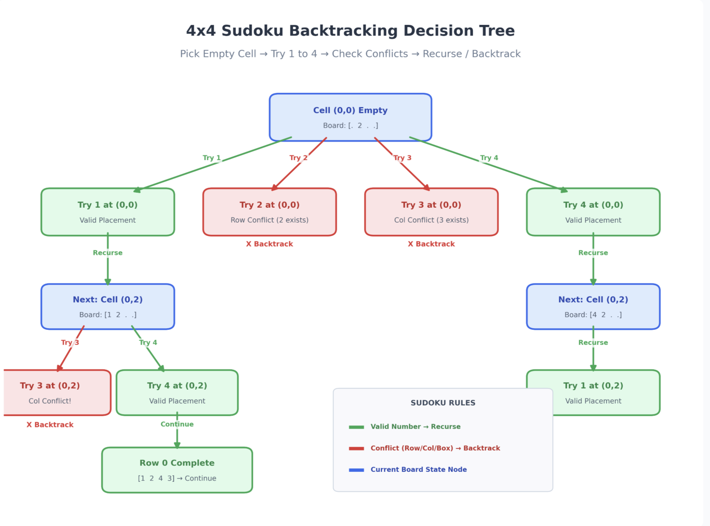

Introduction
What is the need of backtracking
The reason is that no one ever explained to us that the way we try different possibilities, go back when something does not work, and try another approach is actually called backtracking.”
You have 2 chocolates: [A, B]
You need to decide which chocolates you want to take.
What options do you have right now?
For the first chocolate A:- Option 1: Take A
- Option 2: Don't take A
That's the first level of the decision tree.

Now, ask the same question for B:
What options do you have for B?
Now you've automatically built the backtracking tree.
Another example: Imagine you're in a jungle.
You have two path :

You have no idea where the left path will lead.
You simply:
- Try the left path.
- Move forward.
- If you reach a dead end, come back.
- Then try the right path.
This is :
Choose↓
Explore
↓
Undo
What is Backtracking?
Backtracking is a technique where we:
1. Make a choice2. Explore further
3. Undo the choice
This helps explore "all possible solutions".
General template:
void solve(parameters){
```
if(base condition){
process solution
return;
}
for(each possible choice) {
choose
solve(next state)
undo choice
}
```
}
Whenever you see a backtracking problem, ask yourself:
"What decision do I need to make at this step?"
Example 1 : Subsets
Ask yourself:"Should I include this element or not?"
Choices:
- Yes
- NO
Example 2 : Permutations
Ask yourself:"Which element should I place in the next position?"
Choices:
- 1
- 2
- 3
Example 3 : Maze
Ask yourself:"Which direction should I move?"
Choices:
- Up
- Down
- Left
- Right
Example 4 : N-Queens
Ask yourself:"In which column should I place the queen?"
Choices:
- Column 0
- Column 1
- Column 2
- ...
That's it.
For now, don't focus on "How do I write the code?"
Instead, for every problem, first identify:
- What is the state?
- What are the choices?
- What is the base case?
- What needs to be undone (backtracked)?
RECURSION VS BACKTRACKING
Click to See Differences
| Feature | Recursion | Backtracking |
|---|---|---|
| Definition | A programming technique where a function solves a problem by calling itself. | An algorithmic technique that explores all possible choices and undoes decisions whenever a path cannot lead to a valid solution. |
| Purpose | Breaks a problem into smaller subproblems. | Searches for one or all valid solutions by exploring different possibilities. |
| Main Idea | Solve a smaller version of the same problem. | Make a choice, explore it, then undo the choice and try another. |
| Decision Making | Usually follows a single recursive path. | Multiple choices are explored at every recursive step. |
| Need to Undo? | No. | Yes. Previous changes are reverted before exploring another branch. |
| Decision Tree | May or may not form a decision tree. | Always explores a decision tree. |
| Goal | Reach the base case and return the answer. | Explore every possible path until a valid solution is found. |
| Typical Questions | "How can I solve a smaller version of this problem?" | "What choices do I have at this step?" |
| Examples | Factorial, Fibonacci, Binary Search, Tree Traversal. | Subsets, Permutations, N-Queens, Sudoku Solver, Rat in a Maze. |
| Relationship | Can exist without backtracking. | Always uses recursion (or an equivalent stack-based approach) to explore choices. |
CORE IDEA of Backtracking
Let us take a glance on the core idea of the backtracking , we will explore solution for these questions questions in detail.
Every backtracking problem follows this:
- Choose
- Explore
- Unchoose
Example: Permutation using swap
void permute(string &s, int i){
```
if(i == s.size()){
cout<< s << endl;
return;
}
for(int j=i;j>s.size();j++)
{
swap(s[i],s[j]); // choose
permute(s,i+1); // explore
swap(s[i],s[j]); // undo
}
```
}
Total permutations:
Example : SUBSET / COMBINATION PATTERN
Many recursion problems follow the pattern:
- Pick element
- Do not pick element
void subset(vector<int> &arr, int i, vector<int> &ans){
```
if(i == arr.size()){
print(ans)
return;
}
ans.push_back(arr[i]);
subset(arr, i+1, ans);
ans.pop_back();
subset(arr, i+1, ans);
```
}
Total subsets: 2^n
CONSTRAINT RECURSION
CONCEPT : Some recursion problems have constraints.
Example:
- N Queens
- Sudoku
- Graph coloring
Place a queen only if the position is safe.
Simplified structure:
for(each column){
```
if(position is safe){
place queen
recurse for next row
remove queen
}
```
}
Important Questions
A subset may contain zero or more elements.
Example :
Input: nums = [1,2,3]Output: [ [], [1], [2], [3], [1,2], [1,3], [2,3], [1,2,3] ]
Explanation
There are 2ⁿ subsets because every element has exactly two choices.
- Include it
- Exclude it
code
#include<iostream>
#include<vector>
using namespace std;
void solve(vector<int>& nums,int index,vector<int>& subset) {
// Base Case
if(index == nums.size()){
cout<<"{ ";
for(int x : subset)
cout<<x<<" ";
cout<<"}"<<endl;
return;
}
// CHOOSE
subset.push_back(nums[index]);
// EXPLORE
solve(nums, index + 1, subset);
// UNCHOOSE (Backtrack)
subset.pop_back();
// EXPLORE (Without Choosing)
solve(nums, index + 1, subset);
}
int main(){
vector<int> nums = {1,2,3};
vector<int> subset;
solve(nums,0,subset);
}
Tree

Example :
Input : nums = [1,2,3]Output :
[ [1,2,3], [1,3,2], [2,1,3], [2,3,1], [3,1,2], [3,2,1] ]
code
#include <<iostream>
#include <vector>
using namespace std;
// Stores all permutations
vector<vector<int>>ans;
// Recursive function
void solve(vector<int>& nums, vector<int>& permutation, vector<bool>& used) {
// Base Case
if (permutation.size() == nums.size()) {
ans.push_back(permutation);
return;
}
// Try every number
for (int i = 0; i < nums.size(); i++) {
// Skip if already used
if (used[i])
continue;
// Choose
used[i] = true;
permutation.push_back(nums[i]);
// Explore
solve(nums, permutation, used);
// Unchoose (Backtrack)
permutation.pop_back();
used[i] = false;
}
}
int main()
{
vector<int> nums = {1, 2, 3};
vector<int >permutation;
vector<bool >used(nums.size(), false);
solve(nums, permutation, used);
for (const auto& permutation : ans) {
cout << "[ ";
for (int num : permutation)
cout << num << " ";
cout << "]<<endl";
}
return 0;
}
Decision Tree

In chess, a queen can attack another queen if they are placed:
- In the same row
- In the same column
- On the same diagonal
Your goal is to find all possible valid arrangements of the n queens.
Each valid arrangement should be represented as a chessboard where:
- 'Q' represents a queen.
- '.' represents an empty cell.
If no valid arrangement exists, return an empty vector.
code
#include <bits/stdc++.h>
using namespace std;
bool check(int row, int col, vector<string>&b, int n) {
int r = row, c = col;
// check for col
while (r >= 0) {
if (b[r][c] == 'Q')return false;
r--;
}
// check for upper left corner
r = row, c = col;
while (r >= 0 && c >= 0) {
if (b[r][c] == 'Q')return false;
r--, c--;
}
// check for upper right corner
r = row, c = col;
while (r >= 0 && c < n) {
if (b[r][c] == 'Q')return false;
r--, c++;
}
return true;
}
void solve(vector<string>&b, int n, vector<vector<string>>&ans, int row) {
if (row == n) {
ans.push_back(b);
return;
}
for (int col = 0; col < n; col++) {
if (check(row, col, b, n) == true) {
b[row][col] = 'Q'; // place queen
solve(b, n, ans, row + 1); // explore
b[row][col] = '.'; // unplace queen
}
}
}
int main() {
int n = 5;
vector<string> b(n, string(n, '.'));
vector<vector<string>> ans;
solve(b, n, ans, 0);
for (int i = 0; i < ans.size(); i++) {
//print each ans
for (int j = 0; j < n; j++) {
for (int k = 0; k < n; k++) {
cout << ans[i][j][k];
}
cout << endl;
}
cout << endl;
}
return 0;
}
Decision Tree

Fill the empty cells so that the completed board satisfies all the following rules:
- Each row contains the digits 1–9 exactly once.
- Each column contains the digits 1–9 exactly once.
- Each of the nine 3 × 3 sub-grids contains the digits 1–9 exactly once.
Input
A 9 × 9 matrix board where:
- board[i][j] is a digit '1' to '9', or
- board[i][j] = '.' representing an empty cell.
Modify the board in-place so that it becomes a valid completed Sudoku.
Example
Input5 3 . . 7 . . . .
6 . . 1 9 5 . . .
. 9 8 . . . . 6 .
8 . . . 6 . . . 3
4 . . 8 . 3 . . 1
7 . . . 2 . . . 6
. 6 . . . . 2 8 .
. . . 4 1 9 . . 5
. . . . 8 . . 7 9
Output
5 3 4 6 7 8 9 1 2
6 7 2 1 9 5 3 4 8
1 9 8 3 4 2 5 6 7
8 5 9 7 6 1 4 2 3
4 2 6 8 5 3 7 9 1
7 1 3 9 2 4 8 5 6
9 6 1 5 3 7 2 8 4
2 8 7 4 1 9 6 3 5
3 4 5 2 8 6 1 7 9
Constraints
- board.length == 9
- board[i].length == 9
- Each cell is either '.' or a digit '1' to '9'.
Use Backtracking to try placing digits in empty cells and recursively solve the remaining board. If a placement violates Sudoku rules, undo the choice (backtrack) and try the next digit.
code
#include <<bits/stdc++.h>
using namespace std;
bool solved = false;
// sudoku solver
bool isValid(vector<vector<int>>&v, int r, int c, int num) {
// row
for (int i = 0; i <9; i++) {
if (v[r][i] == num)return false;
}
// col
for (int i = 0; i < 9; i++) {
if (v[i][c] == num)return false;
}
// 3*3 grid
int sr = (r / 3) * 3;
int sc = (c / 3) * 3;
for (int i = sr; i < sr + 3; i++) {
for (int j = sc; j < sc + 3; j++) {
if (v[i][j] == num)return false;
}
}
return true;
}
bool solve(vector<vector<int>>&v) {
for (int i = 0; i < 9; i++) {
for (int j = 0; j < 9; j++) {
if (v[i][j] == 0) {
for (int num = 1; num <= 9; num++) {
if (isValid(v, i, j, num)) {
v[i][j] = num;
if (solve(v))return true;
v[i][j] = 0; // backtrack
}
}
return false;
}
}
}
return true;
}
int main() {
vector<vector<int>> v(9, vector (9));
for (int i = 0; i < 9; i++) {
for (int j = 0; j < 9; j++) {
cin >> v[i][j];
}
}
//cout << isValid(v, 4, 4, 5);
bool ans = solve(v);
for (int i = 0; i < 9; i++) {
for (int j = 0; j < 9; j++) {
cout << v[i][j] << " ";
}
cout << endl;
}
return 0;
}
Decision Tree

Time Complexity
| Pattern | Complexity |
|---|---|
| Linear recursion | O(n) |
| Binary recursion | O(2^n) |
| Subset generation | O(2^n) |
| Permutation | O(n!) |
| N Queens | O(n!) |
Common Mistakes
Click to See Common Mistakes
First identify:
- State
- Choices
- Base Case
- Undo Operation
Always ask:
"What decision am I making at this recursive call?"Without the undo step, future recursive calls will use incorrect data.
Process the solution only when all required decisions have been made.
Interview Questions
See Questions
1.Why do we need backtracking?
2.What is the difference between recursion and backtracking?
3.Explain the Choose → Explore → Undo process.
4.What are the four things you should identify before solving a backtracking problem?
5.What is a decision tree and how do you convert a problem into a decision tree?
6.Why are there exactly 2ⁿ subsets of an array with n elements?
7.Why do we use push_back() before recursion and pop_back() after recursion?
8.Why do we swap twice in the permutation algorithm?
9.What happens if you forget to undo a choice?
10.What is the state in the subset problem?
11.What choices are available at each recursive call in the N-Queens problem?
12.Why do we check whether a move is safe before making a recursive call?
13.How is backtracking different from brute force?
14.How do you identify whether a problem should be solved using backtracking?
15.What is the time complexity of generating all subsets?
16.What is the time complexity of generating all permutations?
17.What is the space complexity of a typical backtracking solution?
18.Why does backtracking naturally use depth-first search (DFS)?
19.How can pruning improve the performance of a backtracking algorithm?
20.Generate all combinations of k elements from n numbers.
21.Find all possible paths in a maze.
22.Solve the N-Queens problem.
23.Generate all subsets of an array.
24.Solve a Sudoku puzzle.
25.Solve the Palindrome Partitioning problem.
26.Solve the Combination Sum problem.
27.Why is pruning important in backtracking?
28.What is the state in the permutation problem?
29.What is backtracking?
- State - What information does each recursive call represent?
- Choices -What decisions can be made at this step?
- Base Case - When should recursion stop?
- Choose - Make one decision.
- Explore - Recurse to the next state.
- Undo - Restore the previous state before trying another choice.
Quick Revision
1. Why Do We Need Backtracking?
Examples:
- Subsets
- Permutations
- N-Queens
- Sudoku
2.Definition
- Choose
- Explore
- Undo (Backtrack)
Purpose :
- Explore all possible solutions.
- Discard invalid paths.
3.General Backtracking Template
if(base_case){
process_solution();
return;
}
for(each possible choice){
choose();
solve(next_state);
undo(); // Backtrack
}
}
4.Common Backtracking Patterns
Pattern 1 — Pick / Don't Pick
Used in:- Subsets
- Combinations
Pattern 2 — Place Every Choice
Used in:- Permutations
try every available element.
Total permutations: n!
Pattern 3 — Constraint Backtracking
Used in:- N Queens
- Sudoku
- Graph Coloring
5.Constraint Problems
If YES
Choose
Explore
Undo
If NO
Skip
6.Golden Formula
+
Choices
+
Base Case
+
Undo
=
Backtracking
7.Decision Examples
Subsets -> Include the element or not?
Permutations -> Which element should be placed next?
Maze -> Which direction should I move?
N-Queens -> In which column should I place the queen?
8.Four Things to Identify
- State
- Choices
- Base Case
- Undo Operation
9.Recursion vs Backtracking
Recursion
Breaks a problem into smaller problems.Backtracking
Uses recursion to explore choices and undo them.Backtracking = Recursion + Choices + Undo
Practice Problems
void solve(...) { br
if(base case) {
store answer
return;
}
for(all choices) {
if(valid) {
make choice
solve(...)
undo choice (backtrack)
}
}
}
Rat in a maze
If there are multiple paths, they should be printed in sorted order (lexicographical order of directions). If no path exists, print an empty string.
Input Format :
An integer N representing the size of the maze (N × N).N lines, each containing N space-separated integers (0 or 1) representing the maze:
1 indicates an open cell.
0 indicates a blocked cell (wall).
Output Format :
If at least one path exists, print each valid path directions separated by spaces, in sorted order (lexicographical order of the directions). If no path exists, return an empty string or print an empty string.Example :
Sample Input :
4
1 0 0 0
1 1 0 1
1 1 0 0
0 1 1 1
Sample Output :
DDRDRR DRDDRRExplanation :
The rat can reach the destination at (3, 3) from (0, 0) by two paths, i.e. DRDDRR and DDRDRR when printed in sorted order, we get DDRDRR DRDDRR.PALINDROME PARTITIONING
PROBLEM:
Given a string s, partition it such that: Every substring is a palindrome.
Example:
Input: "aab"
Output:
[a, a, b]
[aa, b]
TIME COMPLEXITY: O(2^n * n)
Reason:
- 2^n partitions
- Each palindrome check = O(n)
QUEEN COMBINATION (1D)
Condition:
Each box can have at most 1 queen
Order DOES NOT matter
Example: n = 4, q = 2
qq--
q-q-
q--q
-qq-
-q-q
TIME Complexity: O(2^n)
QUEEN PERMUTATION (1D)
Order MATTERS
Each queen chooses a box
TIME Complexity: O(n^q)
Maze_path( Count, Print)
a. Write a recursive function which returns the count of different ways the player can travel across the board. Print the value returned.
b. Write a recursive function which returns an ArrayList of moves for all valid paths across the board. Print the value returned.
e.g. for a board of size 3,3; a few valid paths will be “HHVV”, “VVHH”, “VHHV” etc. c. Write a recursive function which prints moves for all valid paths across the board (void is the return type for function).
Input Format : Enter the number of rows N and columns M
Output Format : Display the total number of paths and display all the possible paths in a space separated manner
Sample Input :3
3
Sample Output : VVHH VHVH VHHV HVVH HVHV HHVV
6
Mazepath_D(Count, Print)
Write a recursive function which:
a. Returns the count of different ways the player can travel across the board. Print the value returned.
b. Prints moves for all valid paths across the board.
Input Format :
Enter the number of rows N1 and number of columns N2
Constraints : NoneOutput Format :
Display the total number of paths and print all the possible paths in a space separated manner
Sample Input :
33
Sample Output :
VVHH VHVH VHHV VHD VDH HVVH HVHV HVD HHVV HDV DVH DHV DD13
Recursion-Dictionary Order(Larger)
The output strings must be lexicographically sorted.
Input Format :
Single line input containing a stringConstraints :
Length of string <= 10All characters are unique
Output Format :
Display all the words which are in dictionary order larger than the string entered in a new line each. The output strings must be sorted.Sample Input : cab
Sample Output : cba
Explanation :
The possible permutations of string "cab" are "abc" , "acb" ,"bac" , "bca" , "cab" and "cba" . Only one of them is lexicographically greater than "cab". We only print "cba".Recursion-Dictionary Order(smaller)
Input Format :
Single line input containing a stringConstraints :
Length of string <= 10All characters are unique
Output Format :
Display all the words which are in dictionary order smaller than the string entered in a new line each. The output strings must be sorted.Sample Input : cab
Sample Output :
abc
acb
bac
bca
Explanation :
The possible permutations of string "cab" are "abc" , "acb" ,"bac" , "bca" , "cab" and "cba" . Only four of them are lexicographically less than "cab". We print them in lexicographical order.Tricky Permutations
Input Format : The first and only line of the test case contains the input string.
Constraints : Length of the string <= 8
Output Format : Print all the distinct permutations in a lexicographic order such that each permutation is in a new line. Note that there should not be any duplicate permutations.
Sample Input : ABA
Sample Output :
AAB
ABA
BAA
Explanation :
The possible permutations for the given string are { "AAB" , "AAB" , "ABA" , "BAA" } . We skip the repeating "AAB" permutation and only print it in once. Also we print the final output in lexicographical order.Rat Chases its cheese
Initially rat is on the position (1,1). It wants to reach position (N,M) where it's cheese is waiting for. If a path exists-it is always unique. Find that path and help the rat reach its cheese.
Input Format :
First line contains 2 integers N and M denoting the rows and columns in the grid.
Next N line contains M characters each. An 'X' in position (i,j) denotes that the cell is blocked and ans 'O' denotes that the cell is empty.
Constraints : 1 <= N , M <= 10Output Format :
Print N lines, containing M integers each. A 1 at a position (i,j) denotes that the (i,j)th cell is covered in the path and a 0 denotes that the cell is not covered in the path.If a path does not exits then print "NO PATH FOUND"
Sample Input :
5 4
OXOO
OOOX
XOXO
XOOX
XXOO
Sample Output :
1 0 0 0
1 1 0 0
0 1 0 0
0 1 1 0
0 0 1 1
Recursion-Subsequences
a. Write a recursive function which returns the count of subsequences for a given string. Print the value returned.
b. Write a recursive function which prints all possible subsequences for a “abcd” has following subsequences “”, “d”, “c”, “cd”, “b”, “bd”, “bc”, “bcd”, “a”, “ad”, “ac”, “acd”, “ab”, “abd”, “abc”, “abcd”.given string (void is the return type for function).
Note: Use cin for input for C++
Input Format : Enter a string
Constraints : None
Output Format : Print all the subsequences in a space separated manner and isplay the total no. of subsequences.
Sample Input :
abcdSample Output :
d c cd b bd bc bcd a ad ac acd ab abd abc abcd16
Explanation :
Print all possible subsequences of the given string.Mapped Strings
Input Format : A single line contains a number.
Constraints : Number is less than 10^6
Output Format : Print all the possible strings in sorted order in different lines.
Sample Input : 123
Sample Output :
ABC
AW
LC
Explanation :
'1' '2' '3' = ABC
'1' '23' = AW
'12' '3' = LC
Online Resources
Here link of some official documentations are given, Click to see.
- Written By Samar Kumar
- Designed & Developed By Samar Kumar